Bilgisayarlı Görme · Yapay Zeka
Enes Soydan
Kameranın gördüğünü anlamlı veriye dönüştüren sistemler geliştiriyorum: nesne tespiti, model eğitimi ve bu modelleri gerçekten kullanılabilir kılan araçlar.
- Proje
- 8
- Açık kaynak
- 7
- Odak
- CV
Seçilmiş çalışmalar
Görselin üzerine gelince ikinci kare görünür.
-
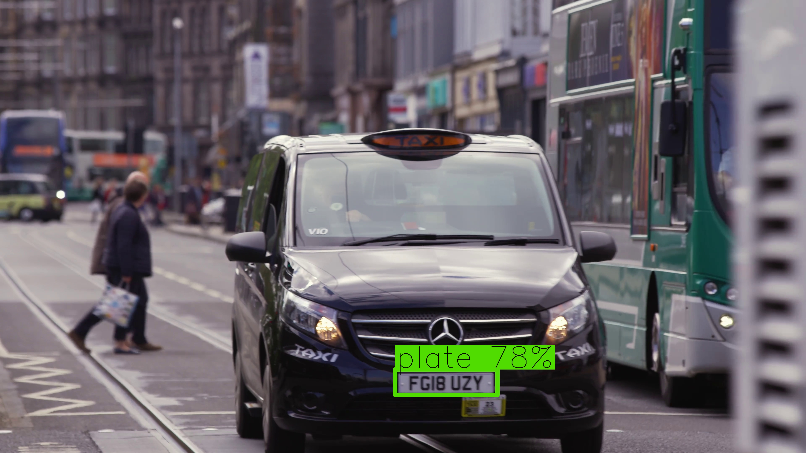
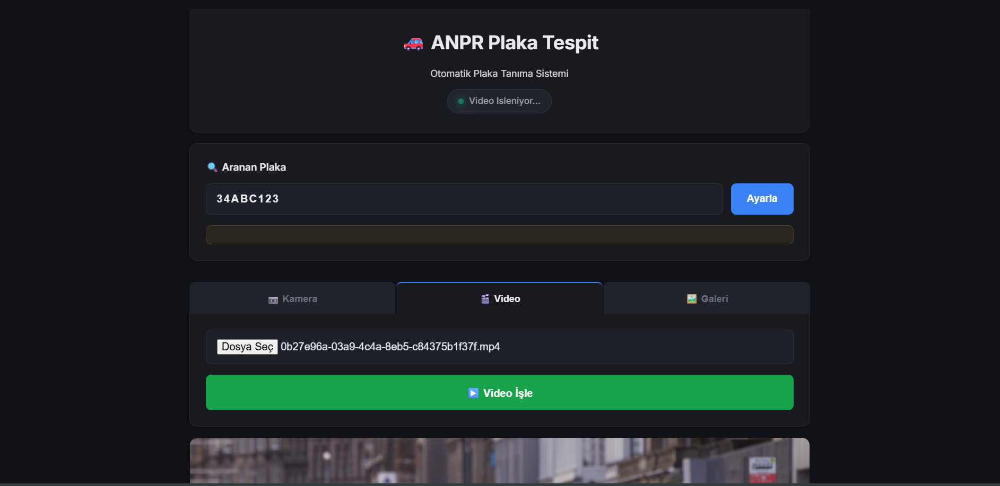
Şekil 1 — Canlı tespit / uygulama arayüzü 01Plaka Tespit Uygulaması
Gerçek zamanlı otomatik plaka tanıma sistemi (ANPR). Video akışında araçların plakalarını tespit edip, OCR ile okuyan ve veritabanına kaydeden uçtan uca bir çözüm. İki aşamalı pipeline: ilk model plakayı tespit eder, ikinci model karakterleri okur.
- Canlı kamera / video dosyası desteği
- İki aşamalı YOLO + OCR pipeline
- Flask web arayüzü + Tkinter masaüstü
-
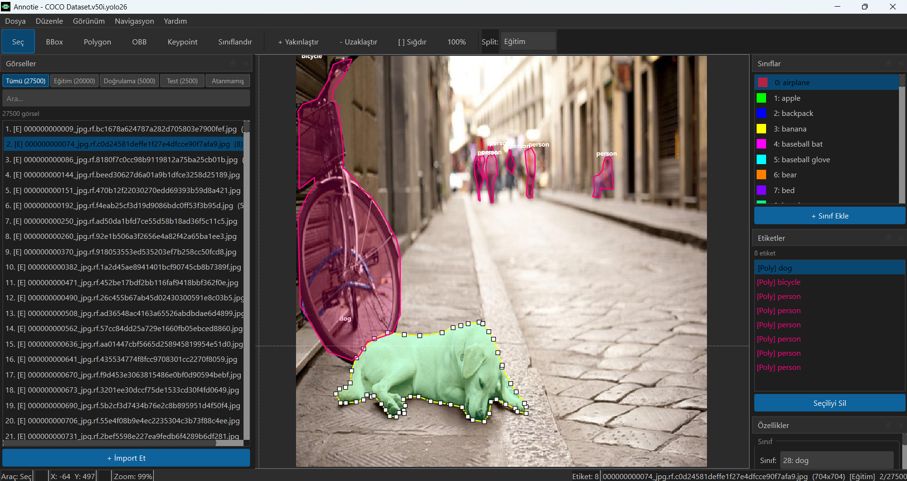
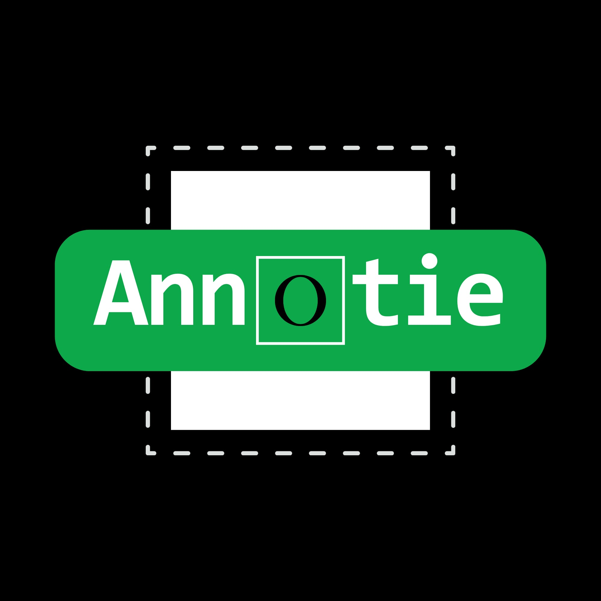
Şekil 2 — Etiketleme ekranı / uygulama simgesi 02Annotie
YOLO formatında veri etiketleme aracı. Bounding box ve polygon annotation desteği, sınıf yönetimi, kolay klavye kısayolları ile hızlı etiketleme. Windows ve macOS için native build. Code signing ile dijital imzalı yükleyici.
- YOLO format (bbox + polygon) desteği
- Windows + macOS çoklu platform
- Dijital imzalı yükleyici & Gatekeeper uyumlu
-
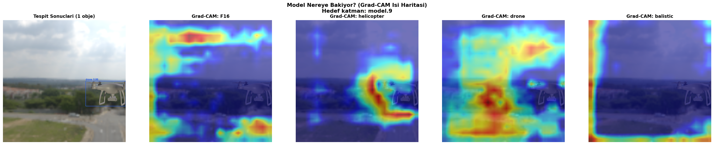
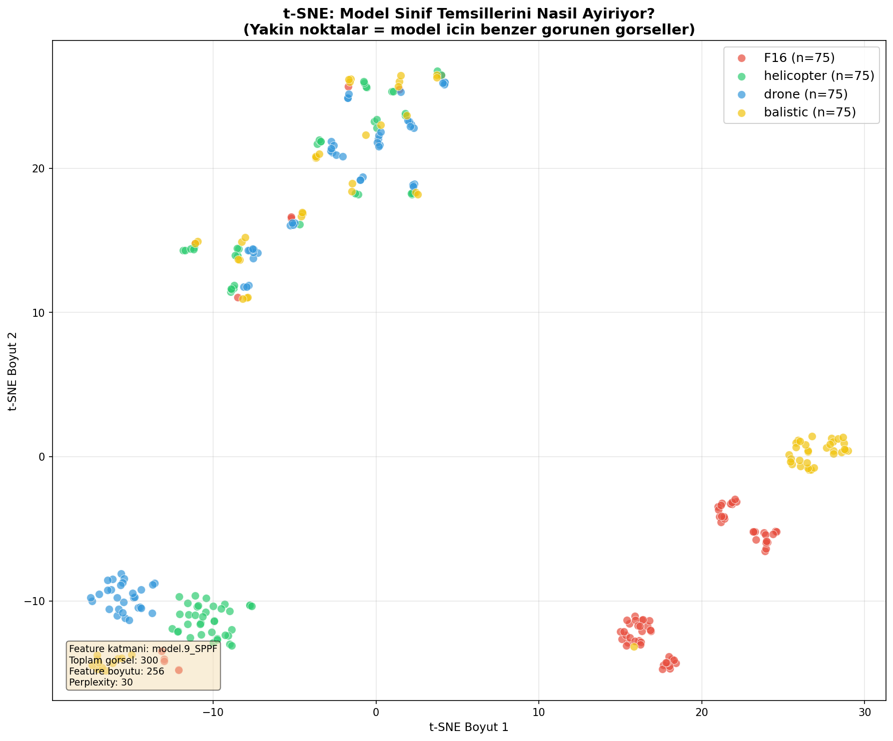
Şekil 3 — Grad-CAM / t-SNE gömmeleri 03YOLO Visualizer
YOLO modelinin nasıl öğrendiğini katman katman gösteren görselleştirme aracı. Feature map'ler, Grad-CAM ısı haritaları, konvolüsyon filtreleri ve t-SNE gömme analizi. Dahili uzman sistem ile model eğitim koçu.
- 4 farklı görselleştirme modu
- Grad-CAM: Model nereye bakıyor?
- Kural tabanlı yapay zeka eğitim koçu
-
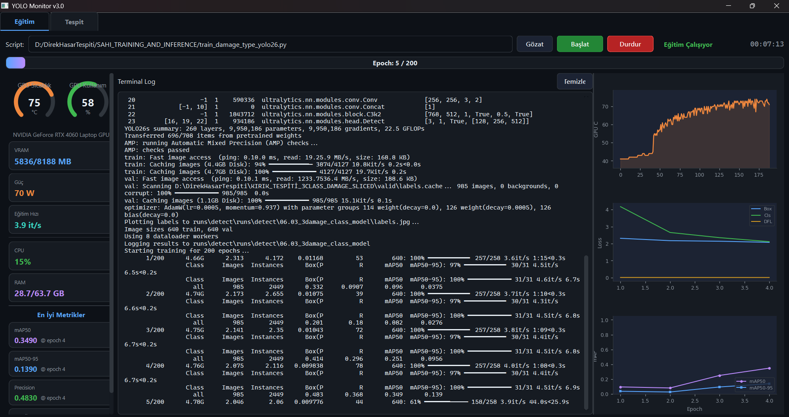
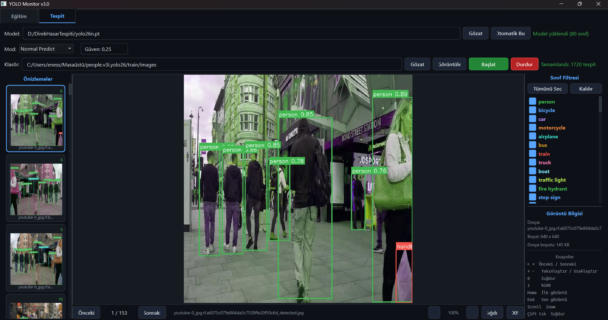
Şekil 4 — Eğitim paneli / toplu tespit 04YOLO Monitor
YOLO model eğitimi ve inference süreçlerini tek panelden yöneten masaüstü uygulaması. Gerçek zamanlı GPU/VRAM/CPU izleme, eğitim logları ve toplu nesne tespiti. Eğitim ve tespit tek arayüzde.
- Gerçek zamanlı GPU/VRAM/CPU izleme
- Eğitim ve toplu tespit tek panelde
- Sınıf filtresi ve önizleme galerisi
-
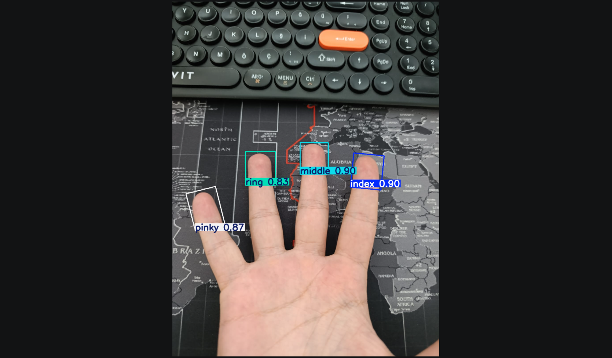
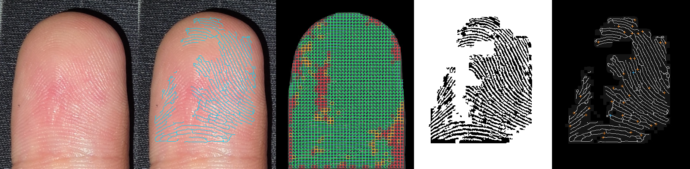
Şekil 5 — Canlı OBB tespiti / kalite analizi hattı 05Temassız Parmak İzi Kalite Analizi
Telefon kamerasından alınan parmak ucu görüntülerini YOLO OBB ile tespit eden; homografiyle kanonik ROI'ye hizalayıp segmentation, ridge/minutiae analizi ve yerel 1:N eşleştirme yapan mobil araştırma prototipi.
- Cihaz üzerinde YOLO OBB + ONNX inference
- Ridge, skeleton ve minutiae kalite analizi
- Şifreli yerel enrollment ve 1:N eşleştirme
-
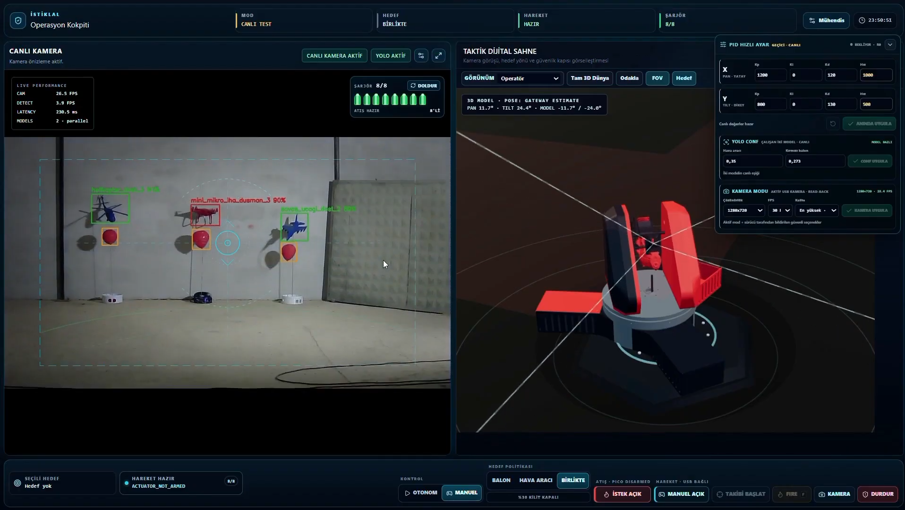
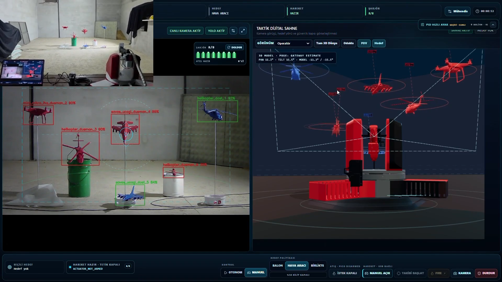
Şekil 6 — Balon tespiti / hava aracı takibi 06İSTİKLAL — TEKNOFEST Hava Savunma Sistemi
TEKNOFEST hava savunma senaryoları için geliştirilen, canlı kamerada hava araçları ve balonları tespit edip takip eden komuta-kontrol sistemi. Projedeki katkım; temiz veri seti oluşturma, nesne tespiti modelleri, makine öğrenmesi ve OpenCV tabanlı görüntü/renk filtreleriydi.
- YOLO ile çok sınıflı gerçek zamanlı nesne tespiti
- Veri temizleme, etiket doğrulama ve model eğitimi
- OpenCV/HSV renk filtreleri ve hedef ayrımı
Repo özel -
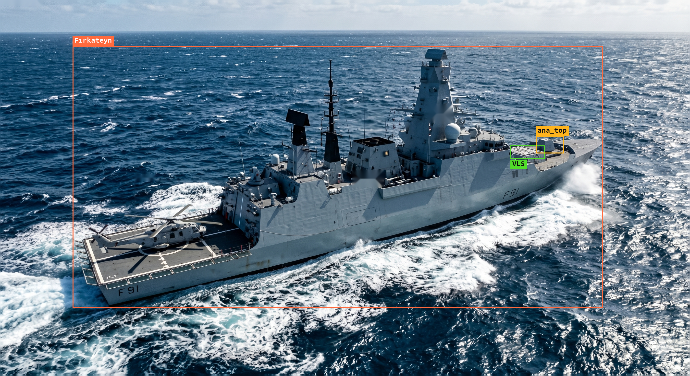
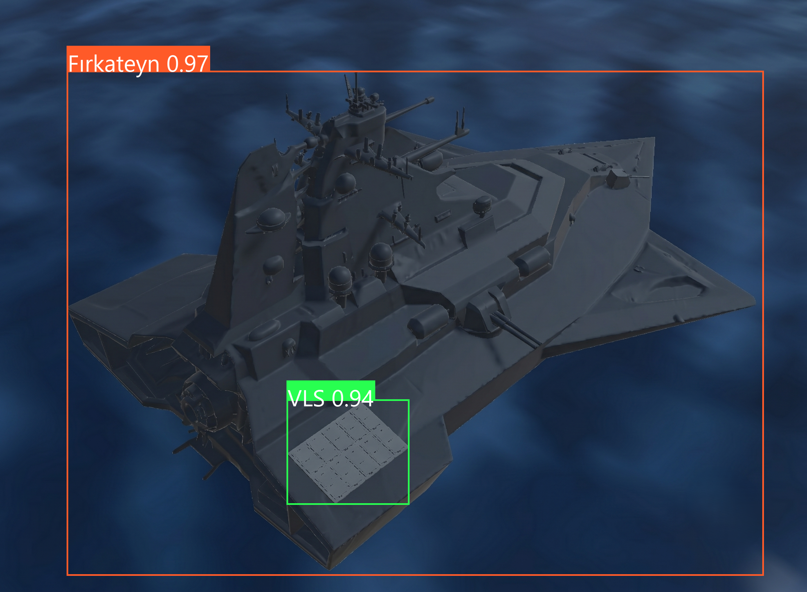
Şekil 7 — İki aşamalı SAHI tespiti / güç puanı 07WarShip Rating
Unity 3D ile üretilen sentetik verilerden savaş gemilerini ve üzerlerindeki silah sistemlerini iki aşamalı YOLO hattıyla tespit eden masaüstü uygulaması. SAHI ile küçük donanımları bulur ve her gemi için sayısal bir güç puanı hesaplar.
- 4 gemi ve 3 donanım sınıfı
- Unity ile sentetik, otomatik etiketli veri üretimi
- Gemi mAP@0.5: 0.995 · Donanım: 0.982
-
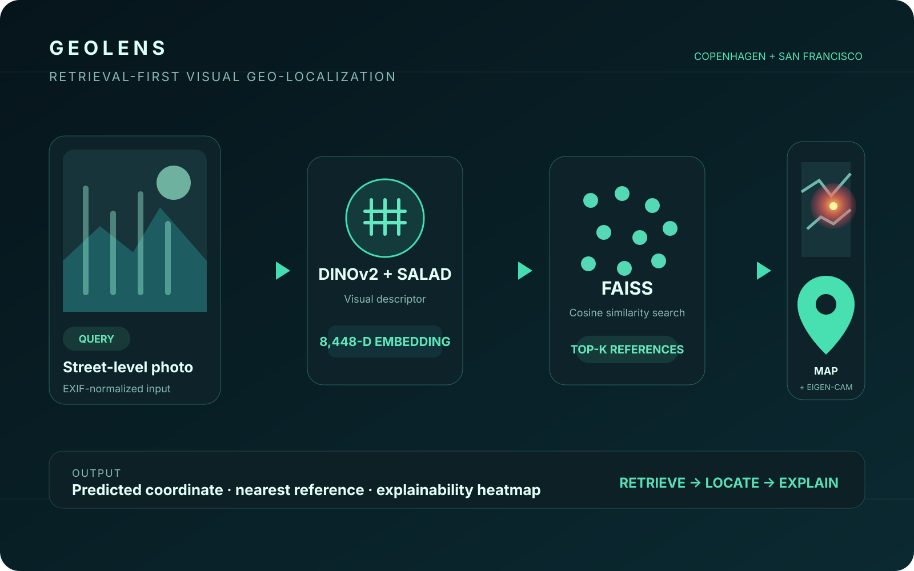
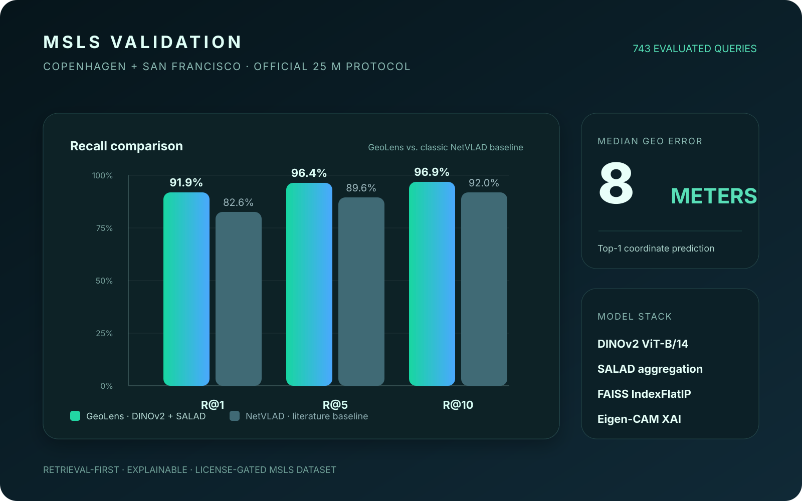
Şekil 8 — Retrieval hattı / MSLS sonuçları 08GeoLens — Açıklanabilir Görsel Konumlandırma
Bir sokak fotoğrafını DINOv2 + SALAD ile 8.448 boyutlu embedding'e dönüştürüp FAISS indeksinde en benzer referansları arayan retrieval-first sistem. Koordinat tahminini haritada ve Eigen-CAM ısı haritasıyla açıklanabilir biçimde sunar.
- DINOv2 + SALAD ve FAISS benzerlik araması
- Eigen-CAM ile açıklanabilir konum tahmini
- MSLS-val: R@1: %91,9 · R@5: %96,4 · medyan 8 m
Hakkımda
Merhaba, ben Enes. Bilgisayarlı görme ve derin öğrenme üzerine çalışıyorum; çoğunlukla YOLO tabanlı nesne tespiti.
Projelerimde genelde işin tamamını yapıyorum: veriyi hazırlıyorum, modeli eğitiyorum, sonra da kullanılabilmesi için bir masaüstü ya da mobil uygulamaya dönüştürüyorum. Annotie, YOLO Monitor ve YOLO Visualizer da bu sürecin parçaları için yazdığım araçlar: etiketleme, eğitimi takip etme ve modelin neye baktığını görme.
TEKNOFEST'te İSTİKLAL ekibinde veri seti hazırlama ve tespit modelleri tarafında çalıştım.
Şu sıralar gerçek zamanlı tespit, sentetik veri üretimi ve Grad-CAM, Eigen-CAM gibi açıklanabilirlik yöntemleriyle ilgileniyorum.
Araçlar
- Derin öğrenme
- PyTorch
- Ultralytics YOLO
- ONNX Runtime
- DINOv2
- FAISS
- SAHI
- Görüntü işleme
- OpenCV
- PaddleOCR
- Grad-CAM
- t-SNE
- Uygulama
- Python
- PySide6 / Qt6
- Tkinter
- Flask
- Expo
- Unity 3D
- Altyapı
- Docker
- Git
- Linux
- NVIDIA SMI
İletişim
Yeni projeler, iş birlikleri veya sadece merhaba demek için yazabilirsiniz.
enesssoydann@gmail.com